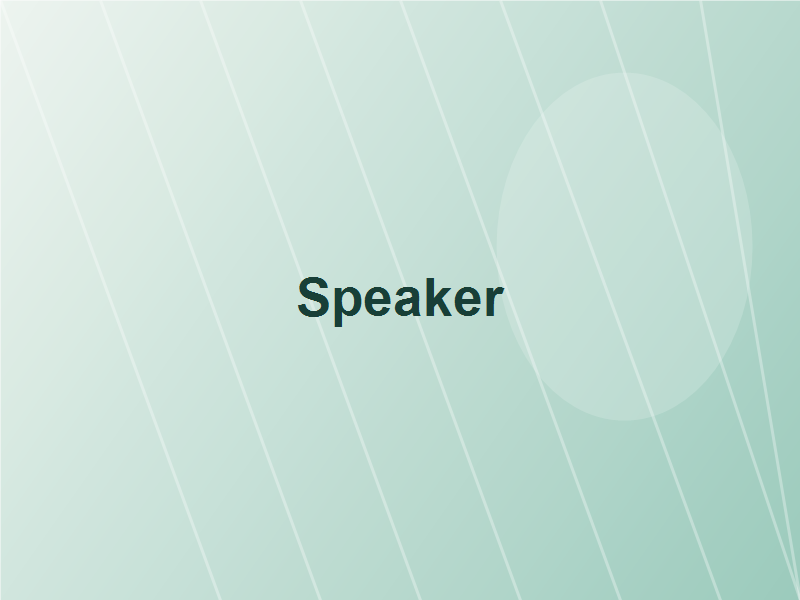
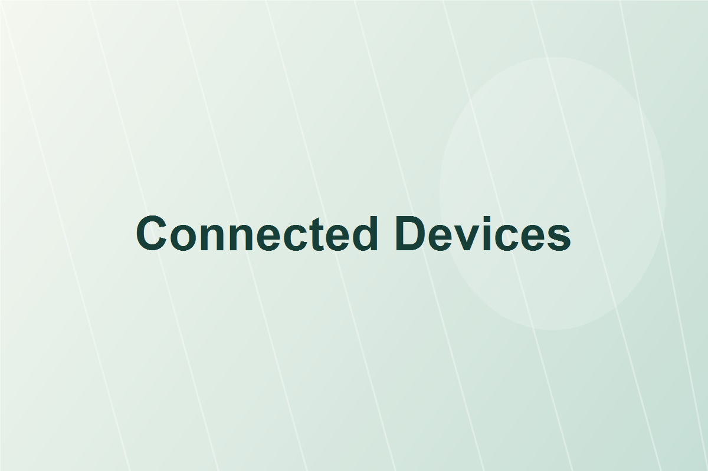
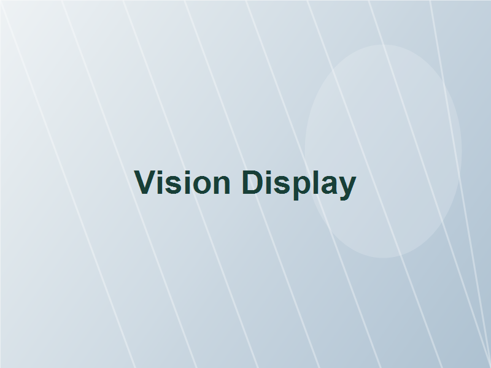
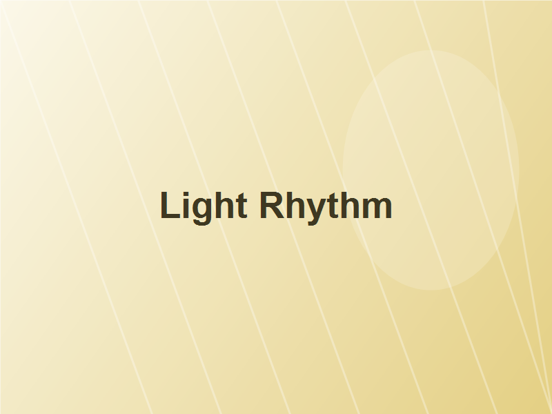
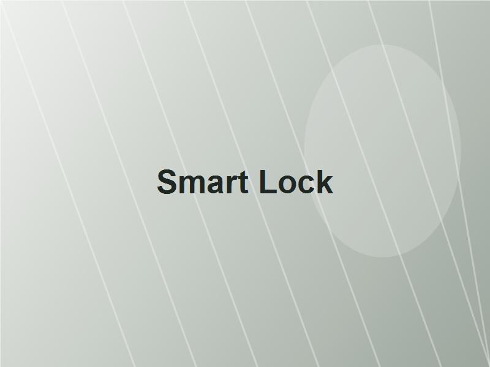
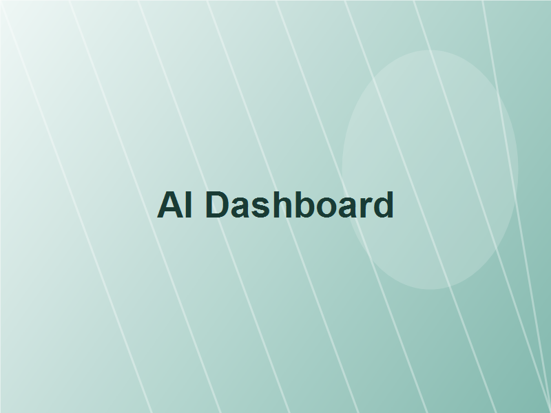
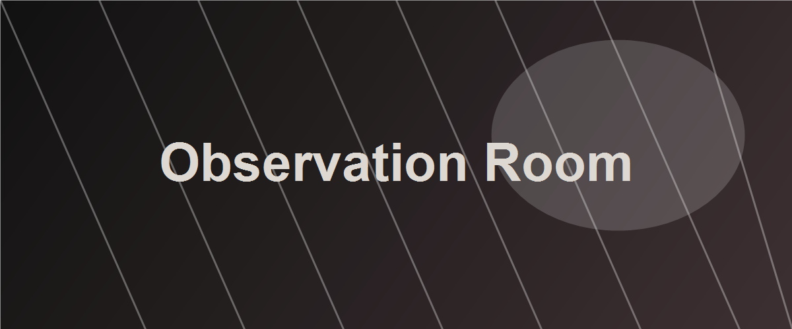
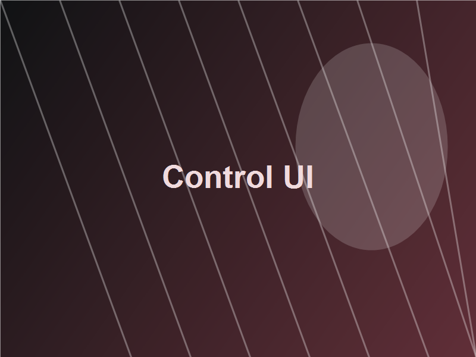
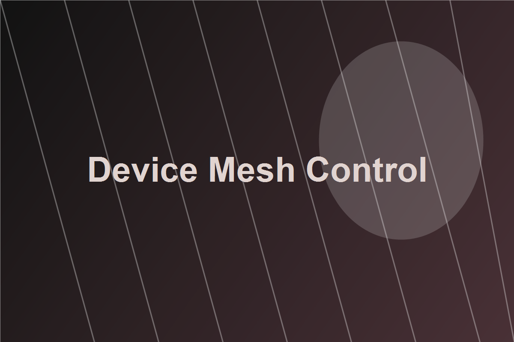

Voice Comfort
HOMURA Speaker
朝の支度、帰宅後の照明、眠る前の音量まで、声ひとつで調整します。
音声ガイドを再生
Connected Devices
HOMURAは複数の機器を横断して、空間、音、映像、セキュリティをまとめて制御します。


Voice Comfort
朝の支度、帰宅後の照明、眠る前の音量まで、声ひとつで調整します。

Scene Sync
家族の時間帯に合わせて、画面の明るさとおすすめ映像を自動で整えます。

Light Rhythm
自然光と家族の動きに合わせて、集中しやすい明るさへ切り替えます。

Safety Flow
帰宅、外出、就寝を認識し、施錠状態を静かに見守ります。
Adaptive AI
HOMURA AIは家族の行動パターンを学習し、家電操作の手間を減らします。必要なときに、必要な設定だけを提示します。

Start
HOMURAアプリを入れるだけで、住まいの状態がひと目で分かります。

Observation Layer
行動履歴、視聴傾向、会話の間、照明への反応。すべては快適さではなく、選択を誘導するために並べ替えられていた。

「おすすめ」は、本人の希望ではなく次に起こしたい行動から逆算されている。

家の中のすべての入力がひとつの観測面として扱われている。
このサイト、ただのスマートホームじゃない気がする。生活を最適化するって書いてあるけど、行動を誘導してるように見える。
※外部サービス（X）へ移動します